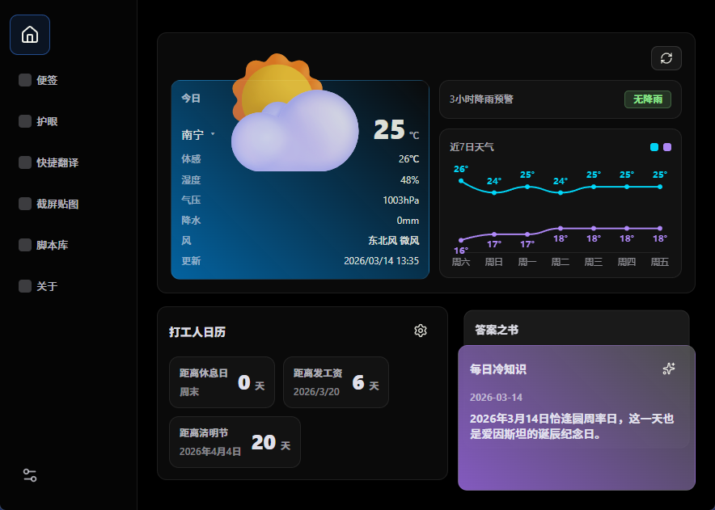
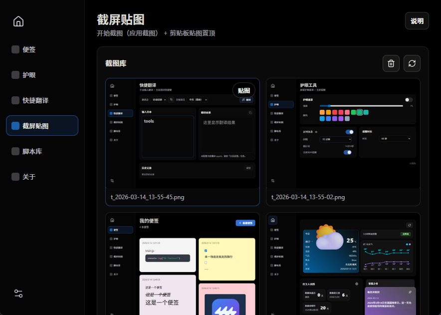
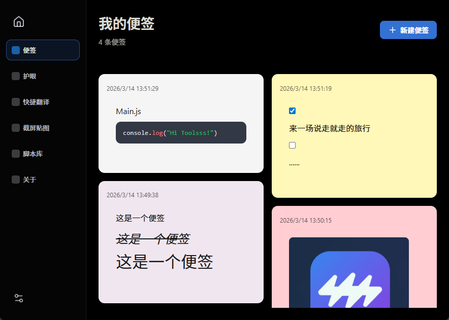
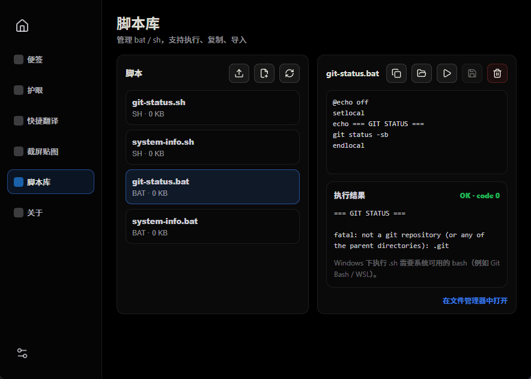
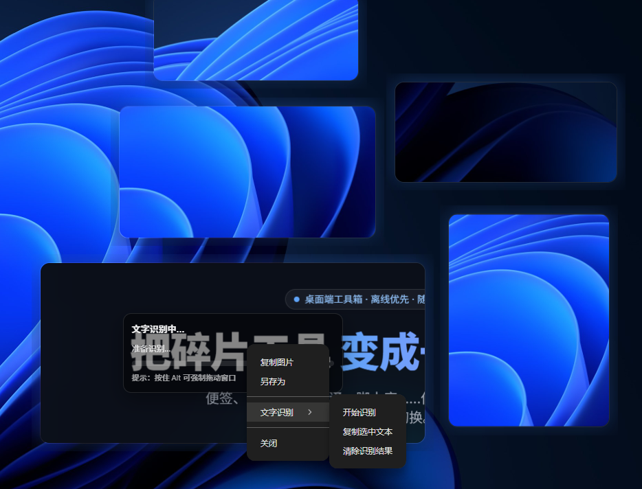
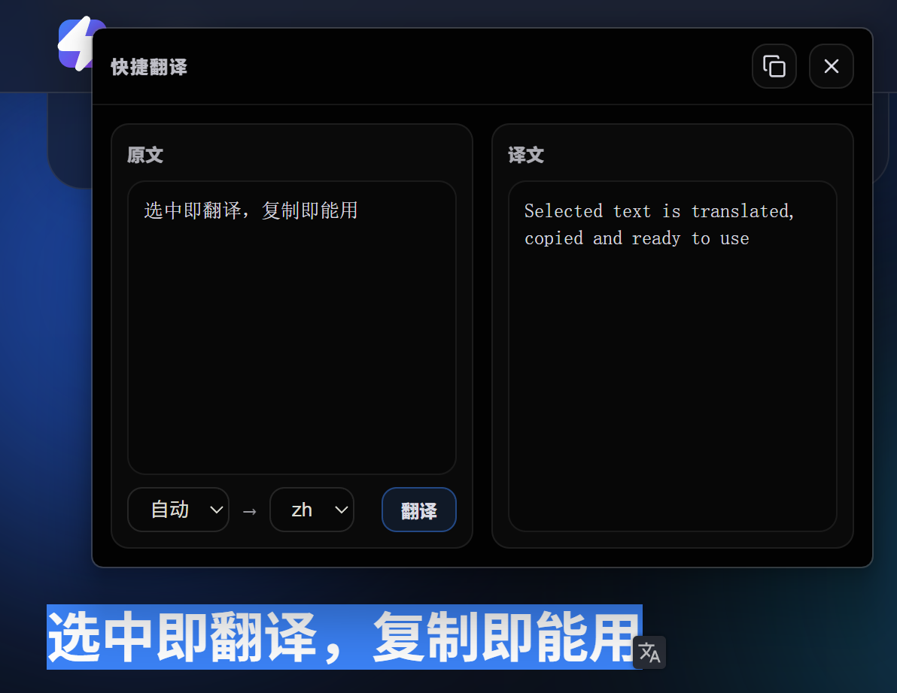

便签、截屏贴图、翻译、脚本库…… 你需要的不是更多工具，而是更少切换。




你真正需要的是稳定、清晰、少打扰的工作流，而不是更多花哨按钮。

截取屏幕区域后直接悬浮置顶：对照文档、跟着教程做、核对数据——不用在窗口之间来回切。
选中任意文本快速翻译，不用切到网页、也不用在多个应用里搬运内容。该留在手里的，只有结果。

常见动作最浪费的是“重复”。把流程收敛成脚本，随时一键运行，减少人肉操作与出错概率。